Spark
Spark VS Flink
相同点
- 都基于内存计算；
- 都有统一的批处理和流处理APl，都支持类似SQL的编程接口；
- 都支持很多相同的转换操作，编程都是用类似于Scala Collection APl的函数式编程模式；
- 都有完善的错误恢复机制；
- 都支持Exactly once的语义一致性。
不同点
- 从流处理的角度来讲，Spark基于微批量处理，把流数据看成是一个个小的批处理数据块分别处理，所以延迟性只能做到秒级。而Flink基于每个事件处理，每当有新的数据输入都会立刻处理，是真正的流式计算，支持毫秒级计算。由于相同的原因，Spark只支持基于时间的窗口操作（处理时间或者事件时间），而Flink支持的窗口操作则非常灵活，不仅支持时间窗口，还支持基于数据本身的窗口，开发者可以自由定义想要的窗口操作。
- 从SQL 功能的角度来讲，Spark和Flink分别提供SparkSQL和Table APl提供SQL交互支持。两者相比较，Spark对SQL支持更好，相应的优化、扩展和性能更好，而Flink在SQL支持方面还有很大提升空间。
- 从迭代计算的角度来讲，Spark对机器学习的支持很好，因为可以在内存中缓存中间计算结果来加速机器学习算法的运行。但是大部分机器学习算法其实是一个有环的数据流，在Spark中，却是用无环图来表示。而Flink支持在运行时间中的有环数据流，从而可以更有效的对机器学习算法进行运算。
- 从相应的生态系统角度来讲，Spark 的社区无疑更加活跃。Spark可以说有着Apache旗下最多的开源贡献者，而且有很多不同的库来用在不同场景。而Flink由于较新，现阶段的开源社区不如Spark活跃，各种库的功能也不如Spark全面。但是Flink还在不断发展，各种功能也在逐渐完善。
Spark架构与运行模式
架构
可以拿Spark的架构和Yarn进行对比，两者比较类似，如下图所示，左边是Yarn，右边是Spark：
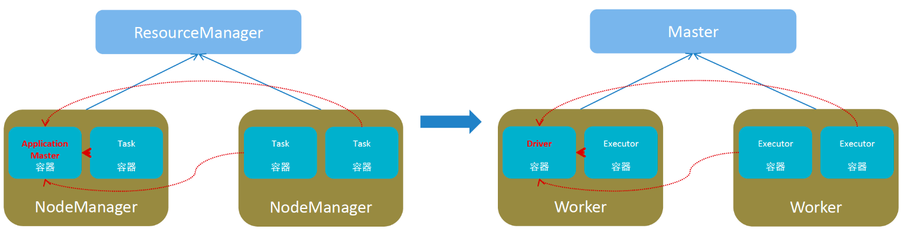
由上图可以看出，Spark的架构主要由以下四个部分组成：
- Master：集群资源管理（类同ResourceManager）
- Worker：单机资源管理（类同NodeManager）
- Driver：单任务管理者（类同ApplicationMaster）
- Executor：单任务执行者（类同YARN容器内的Task）
实际上在Spark onYarn模式下Spark的Master和Worker会被Yarn中的ResourceManager和NodeManager替代。
运行模式
spark的运行模式有以下几种：
- Local模式
- StandAlone模式
- Yarn模式
- K8S模式
- 云服务模式
Local模式
Local模式就是以一个独立进程配合其内部线程来提供完成Spark运行时环境.Local模式下Master/Worker/Driver由Local进程本身担任，Executor由Local起线程执行。Local模式主要用来学习和测试。以下三种方式均可实现Local模式，核心在于--master需要使用local参数。
bin/spark-submit --master local[N]--master参数采用：Local[N]或Local[*]，其中N代表可以使用N个线程，*按照Cpu最多的Cores设置线程数bin/pyspark：提供一个交互式的Python解释器环境，./bin/pyspark --master yarn --deploy-mode cluster，是否是Local模式，主要看master参数bin/spark-shell：这是一个scala语言的交互式环境
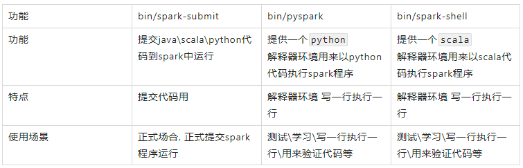
StandAlone模式
StandAlone模式是Spark自带的一种集群模式，不同于前面本地模式启动多个进程来模拟集群的环境，StandAlone模式是真实地在多个机器之间搭建Spark集群的环境，完全可以利用该模式搭建多机器集群，用于实际的大数据处理。
Spark Standalone集群是Master-Slaves架构的集群模式，和大部分的Master-Slaves结构集群一样，存在着Master单点故障（SPOF）的问题。Spark提供了两种高可用HA的解决方案：
基于文件系统的单点恢复(Single-Node Recovery with Local File System)--只能用于开发或测试环境。
基于zookeeper的Standby Masters(Standby Masters with ZooKeeper)--可以用于生产环境。
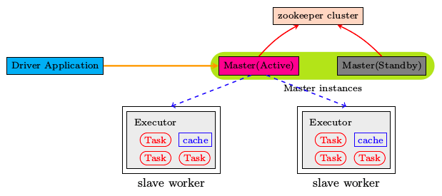
在高可用HA模式下，多个Master只有一个Active，其它的都Standby。
Yarn模式
对于Spark On YARN, 无需部署Spark集群, 只要找一台服务器, 充当Spark的客户端, 即可提交任务到YARN集群中运行。 Master角色由YARN的ResourceManager担任。Worker角色由YARN的NodeManager担任。Driver角色运行在YARN容器内或提交任务的客户端进程中。真正干活的Executor运行在YARN提供的容器内。
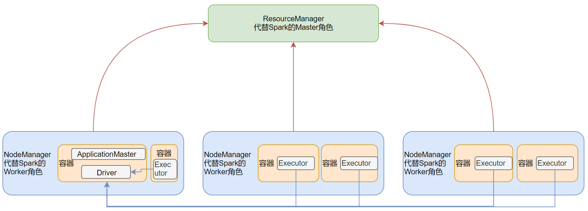
Spark On YARN是有两种运行模式的,一种是Cluster模式一种是Client模式。这两种模式的区别就是Driver运行的位置.
client：Driver在客户端进程内，比如Driver运行在spark-submit程序的进程中
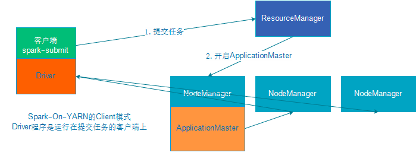
cluster：Driver在容器内，和ApplicationMaster在同一个容器内
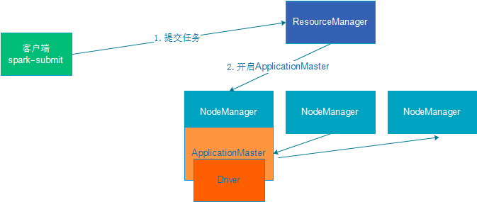
| Cluster模式 | Client模式 | |
|---|---|---|
| Driver运行位置 | YARN容器内 | 客户端进程内 |
| 通讯效率 | 高 | 低于Cluster模式 |
| 日志查看 | 日志输出在容器内,查看不方便 | 日志输出在客户端的标准输出流中,方便查看 |
| 生产可用 | 推荐 | 不推荐 |
| 稳定性 | 稳定 | 基于客户端进程,受到客户端进程影响 |
运行端口
4040：是一个Application在运行的过程中临时绑定的WEB端口，用以查看当前任务的状态。4040是个临时端口，程序运行完按成后会被注销。
8080：是StandAlone模式下，Master进程的WEB端口，用以查看当前Master（集群）的状态。
18080：历史服务绑定的WEB端口。由于每个程序运行完成后，4040端口就被注销了。在以后想回看某个程序的运行状态就可以通过历史服务器查看。历史服务器长期稳定运行，可供随时查看被记录的程序的运行过程。
程序运行层次结构
Application
每个Application包含若干个Job。一般Spark中的action操作（如save、collect），会生成一个Job。
每个Job有多个Stage。
- 每个Stage由多个task（线程）执行，每个task处理单个Partition上的数据。Task是Spark的最小执行单位。
RDD编程
程序入口
SparkContext：RDD 编程的程序入口对象是SparkContext对象（不论何种编程语言）。只有构建出SparkContext，基于它才能执行后续的API调用和计算。SparkContext对象的构建以及Spark程序的退出，由Driver负责执行。- 非数据处理的部分由Driver执行
- 数据处理的部分(（干活）由Executor执行
from pyspark import SparkContext,SparkConf conf = SparkConf().setAppName("tutorial").setMaster("local[*]") sc=SparkContext(conf=conf)SparkSession：Spark2.0之后作为Spark程序的统一入口- RDD编程，可以从
SparkSession对象中获取到SparkContext SparkSQL直接的编程入口
from pyspark.sql import SparkSession spark = SparkSession.builder.appName("dataframe").master("local[*]").getOrCreate() sc = spark.sparkContext
- RDD编程，可以从
Python On Spark 执行原理
PySpark宗旨是在不破坏Spark已有的运行时架构，在Spark架构外层包装一层Python API，借助Py4j实现Python和Java的交互，进而实现通过Python编写Spark应用程序，其运行时架构如下图所示。
程序运行时，Driver将Python代码翻译成JVM可执行的代码；Executor不翻译，直接跑Python代码。所以需要在Executor所在的所有机器上安装需要的Python库。
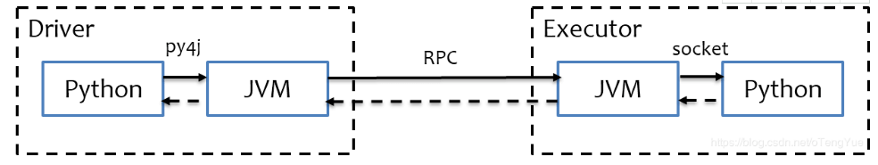
Words Count
from pyspark import SparkContext,SparkConf
conf = SparkConf().setAppName("tutorial").setMaster("local[*]")
sc=SparkContext(conf=conf)
rdd1 = sc.textFile("words.txt")
print(rdd1.getNumPartitions()) # 获取RDD分区数
rdd2 = rdd1.flatMap(lambda x:x.split(' '))
rdd3 = rdd2.map(lambda x:(x, 1))
rdd4 = rdd3.reduceByKey(lambda a, b: a+b)
print(rdd4.collect())
2
[('Hello', 3), ('world', 1), ('Spark', 2), ('Flink', 1), ('and', 1)]
算子
Transformation算子
转换算子。输入为RDD，返回值也为RDD的算子。Transformation算子是懒加载（Lazy加载），也就是说：没有Action算子的话Transformation算子不会运行。
# Transformation算子
# map算子：将RDD中的每一条数据按照传入的逻辑进行处理，返回新的RDD
rdd = sc.parallelize([1,2,3,4,5], 3)
print("map: ", rdd.map(lambda x: x*10).collect())
# flatMap算子：先对RDD执行map操作，然后再进行解除嵌套操作
rdd = sc.parallelize([[1,2,3], [4,5,6], [7,8,9]])
print("flatMap: ", rdd.map(lambda x: x).collect())
print("flatMap: ", rdd.flatMap(lambda x: x).collect())
print("flatMap: ", rdd.flatMap(lambda x: [i*10 for i in x]).collect())
# mapValues算子：对KV型RDD中的Value执行map操作
rdd = sc.parallelize([('a', 1), ('a', 2), ('a', 3), ('b', 1), ('b', 2)], 3)
print("mapValue: ", rdd.mapValues(lambda x:x*10).collect())
# reduceByKey算子：针对KV型RDD，自动按照key分组，然后根据提供的聚合逻辑，完成组内数据（KV中的value）的聚合操作
rdd = sc.parallelize([('a', 1), ('a', 2), ('a', 3), ('b', 1), ('b', 2)], 3)
print("reduceByKey: ", rdd.reduceByKey(lambda x,y: x+y).collect())
# groupBy算子：对RDD数据进行分组
rdd = sc.parallelize([1,2,3,4,5], 3)
rdd2 = rdd.groupBy(lambda x: 'even' if (x%2 == 0) else 'odd')
print("groupBy: ", rdd2.collect())
print("groupBy: ", rdd2.map(lambda x: (x[0], list(x[1]))).collect())
# groupByKey算子：针对KV型RDD，自动按照key分组
rdd = sc.parallelize([('a', 1), ('a', 2), ('a', 3), ('b', 1), ('b', 2)], 3)
rdd2 = rdd.groupByKey()
print("groupByKey: ", rdd2.collect())
print("groupByKey: ", rdd2.map(lambda x: (x[0], list(x[1]))).collect())
# filter算子：过滤不想要的数据，保留想要的数据
rdd = sc.parallelize([1,2,3,4,5], 3)
print("filter: ", rdd.filter(lambda x: x%2 == 1).collect()) # 过滤偶数，保留奇数
# distinct算子：对RDD进行去重
rdd = sc.parallelize([1,1,2,2,2,3,3,3,4,5,5], 3)
print("distinct: ", rdd.distinct().collect())
# glom算子：将RDD的数据加上嵌套，这个嵌套按照分区来进行
rdd = sc.parallelize([1,2,3,4,5,6,7,8,9], 3)
print("glom: ", rdd.glom().collect())
# sortBy算子：对RDD数据进行排序。numPartitions参数如果设置的是大于1，生产环境则会导致结果只是分区内有序
rdd = sc.parallelize([('c', 1), ('d', 5), ('a', 7), ('b', 3), ('f', 2), ('a', 2), ('c', 5), ('b', 1)], 3)
print("sortBy: ", rdd.sortBy(lambda x:x[1], ascending=False, numPartitions=1).collect())
# sortByKey算子：针对KV型RDD，按照key进行排序。如果需要全局有序，numPartitions需要设置为1
rdd = sc.parallelize([('a', 6), ('c', 2), ('A', 3), ('A', 1), ('d', 5), ('f', 4),
('B', 3), ('b', 3), ('B', 2), ('e', 2), ('E', 5)], 3)
print("sortByKey: ", rdd.sortByKey(ascending=False, numPartitions=1).collect())
print("sortByKey: ", rdd.sortByKey(ascending=False, numPartitions=1, keyfunc=lambda key: str(key).lower()).collect())
# union算子：将2个RDD合并成1个RDD
rdd1 = sc.parallelize([1,1,3,3,5], 3)
rdd2 = sc.parallelize(['a','a','c','c','d'], 3)
print("union: ", rdd1.union(rdd2).collect())
# join算子：对两个KV型的RDD执行类似SQL语句中的JOIN操作
rdd1 = sc.parallelize([('a', 1), ('b', 2), ('c', 3)], 3)
rdd2 = sc.parallelize([('b', 'X'), ('c', 'Y'), ('d', 'Z')], 3)
print("join: ", rdd1.join(rdd2).collect())
print("leftOuterJoin: ", rdd1.leftOuterJoin(rdd2).collect())
print("rightOuterJoin: ", rdd1.rightOuterJoin(rdd2).collect())
# intersection算子：求2个RDD的交集
rdd1 = sc.parallelize([1,2,3,4,5], 3)
rdd2 = sc.parallelize([2,3,4,5,6], 3)
print("intersection: ", rdd1.intersection(rdd2).collect())
map: [10, 20, 30, 40, 50]
flatMap: [[1, 2, 3], [4, 5, 6], [7, 8, 9]]
flatMap: [1, 2, 3, 4, 5, 6, 7, 8, 9]
flatMap: [10, 20, 30, 40, 50, 60, 70, 80, 90]
mapValue: [('a', 10), ('a', 20), ('a', 30), ('b', 10), ('b', 20)]
reduceByKey: [('b', 3), ('a', 6)]
groupBy: [('even', <pyspark.resultiterable.ResultIterable object at 0x7f8c2b1d3e50>), ('odd', <pyspark.resultiterable.ResultIterable object at 0x7f8c2b1e9400>)]
groupBy: [('even', [2, 4]), ('odd', [1, 3, 5])]
groupByKey: [('b', <pyspark.resultiterable.ResultIterable object at 0x7f8c2b1d39d0>), ('a', <pyspark.resultiterable.ResultIterable object at 0x7f8c2b1e9670>)]
groupByKey: [('b', [1, 2]), ('a', [1, 2, 3])]
filter: [1, 3, 5]
distinct: [3, 1, 4, 2, 5]
glom: [[1, 2, 3], [4, 5, 6], [7, 8, 9]]
sortBy: [('a', 7), ('d', 5), ('c', 5), ('b', 3), ('f', 2), ('a', 2), ('c', 1), ('b', 1)]
sortByKey: [('f', 4), ('e', 2), ('d', 5), ('c', 2), ('b', 3), ('a', 6), ('E', 5), ('B', 3), ('B', 2), ('A', 3), ('A', 1)]
sortByKey: [('f', 4), ('e', 2), ('E', 5), ('d', 5), ('c', 2), ('B', 3), ('b', 3), ('B', 2), ('a', 6), ('A', 3), ('A', 1)]
union: [1, 1, 3, 3, 5, 'a', 'a', 'c', 'c', 'd']
join: [('c', (3, 'Y')), ('b', (2, 'X'))]
leftOuterJoin: [('c', (3, 'Y')), ('b', (2, 'X')), ('a', (1, None))]
rightOuterJoin: [('d', (None, 'Z')), ('c', (3, 'Y')), ('b', (2, 'X'))]
intersection: [2, 3, 4, 5]
groupByKey+聚合性能比单独使用reduceByKey要差一些，因为reduceByKey会在分组之前先进行一次聚合，再分组的话网络IO就少很多了。如下图所示为
groupByKey+聚合：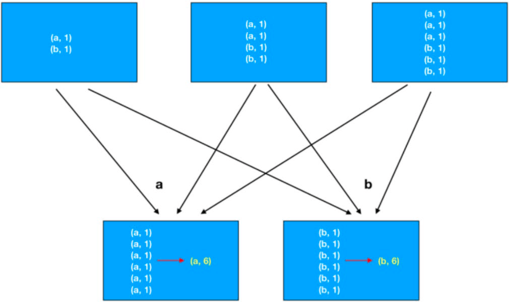
如下图所示为
reduceByKey：
Action算子
动作（行动）算子。返回值不是RDD的算子。
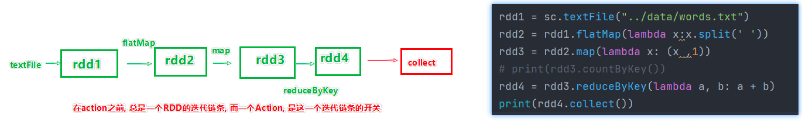
# Action算子
# collect算子：将RDD各个分区内的数据，统一收集到Driver中，形成一个List
# 用collect算子结果数据集不能太大，以免将Driver内存撑爆
rdd = sc.parallelize(range(1, 10), 3)
print("collect: ", rdd.collect())
# reduce算子：对RDD算子按照传入的逻辑进行聚合
rdd = sc.parallelize(range(1, 10), 3)
print("reduce: ", rdd.reduce(lambda a,b: a+b))
# fold算子：也是RDD根据传入逻辑进行聚合
# 但是，各个分区先内部聚合且带上初始值，再做分区间的聚合
# 分区间的聚合也会带上初始值
rdd = sc.parallelize(range(1, 10), 3)
print("fold: ", rdd.fold(10, lambda a,b: a+b))
# first算子：取出RDD的第一个元素
rdd = sc.parallelize(range(1, 10), 3)
print("first: ", rdd.first())
# take算子：取RDD的前n个元素，组合成list返回
# 预期结果集需要比较小，因为所有数据都会load进内存
rdd = sc.parallelize(range(1, 10), 3)
print("take: ", rdd.take(5))
# top算子：对RDD进行降序排列，取前n个组成List返回
# 预期结果集需要比较小，因为所有数据都会load进内存
rdd = sc.parallelize(range(1, 10), 3)
print("top: ", rdd.top(5))
# takeOrdered算子：对RDD进行升序排列或者按照给定逻辑排序，取前n个
# 预期结果集需要比较小，因为所有数据都会load进内存
rdd = sc.parallelize([3,5,2,1,6,0,8,1,4], 3)
print("takeOrdered: ", rdd.takeOrdered(5))
print("takeOrdered: ", rdd.takeOrdered(5, lambda x: -x))
# count算子：计算RDD有多少条数据，返回条数的数值
rdd = sc.parallelize(range(1, 10), 3)
print("count: ", rdd.count())
# takeSample算子：随机抽样RDD的数据
# withReplacement参数：True表示允许取同一位置的数据。注意：只是位置是否相同，不代表数值是否相同。
# num参数：抽样个数，seed参数：随机数种子
# 预期结果集需要比较小，因为所有数据都会load进内存
rdd = sc.parallelize(range(1, 10), 3)
print("takeSample: ", rdd.takeSample(True, 5, seed=16))
# foreach算子：对RDD的每个元素执行提供的逻辑（类似map）
# 但这个方法没有返回值。如果需要输出，则需要放到foreach的输入参数func中
# 输出会输出到各Executor的标准输出中
rdd = sc.parallelize(range(1, 10), 3)
r = rdd.foreach(lambda x: print(x*10))
print("foreach: ", r)
# saveAsTextFile算子：将RDD的数据写入文件系统中
# 支持本地写入，也支持HDFS等文件系统
# 各个分区所在的Executor分别写入到目标文件系统中，有几个分区就会产生几个文件
rdd = sc.parallelize([1,2,3,4,5,6,7,8,9], 3)
rdd.saveAsTextFile("RDDTest")
collect: [1, 2, 3, 4, 5, 6, 7, 8, 9]
reduce: 45
fold: 85
first: 1
take: [1, 2, 3, 4, 5]
top: [9, 8, 7, 6, 5]
takeOrdered: [0, 1, 1, 2, 3]
takeOrdered: [8, 6, 5, 4, 3]
count: 9
takeSample: [4, 2, 6, 9, 6]
foreach: None
foreach和saveAsTextFile两个算子的执行是跳过了Driver，直接由分区所在的Executor来执行。其它的Action算子都是会将结果发送给Driver。
分区操作算子
mapPartitions算子
功能和map算子一样都是Transformation算子。但map算子计算一次只传递一个数据，而mapPartitions算子计算时以迭代器对象的形式一次传递一整个分区的数据。理论上，mapPartitions算子因为避免了多次数据传输，性能上应该会更好一些。但实际中还是需要具体问题具体分析。
# mapPartitions算子：类似map，但一次传递一整个分区的数据
rdd = sc.parallelize([1,2,3,4,5,6,7,8,9], 3)
def func(iter):
result = list()
for it in iter:
result.append(it * 10)
return result
print("mapPartitions: ", rdd.mapPartitions(func).collect())
mapPartitions: [10, 20, 30, 40, 50, 60, 70, 80, 90]
foreachPartition算子
Action算子，功能和foreach一致，只是一次处理一整个分区的数据。没有返回值。
# foreachPartition算子：Action算子，类似foreach，但一次传递一整个分区的数据
rdd = sc.parallelize([1,2,3,4,5,6,7,8,9], 3)
def func(iter):
print("---")
result = list()
for it in iter:
result.append(it * 10)
print(result)
print("foreachPartition: ", rdd.foreachPartition(func))
foreachPartition: None
---
[40, 50, 60]
---
[70, 80, 90]
---
[10, 20, 30]
partitionBy算子
Transformation算子。能够对KV型RDD算子针对K进行自定义分区操作。
# partitionBy算子：Transformation算子，能够对KV型RDD算子针对K进行自定义分区操作
rdd = sc.parallelize([(1,'a'),(2,'b'),(3,'c'),(4,'d'),(5,'e')])
rdd2 = rdd.partitionBy(2)
print("partitionBy: ", rdd2.glom().collect())
rdd3 = rdd.partitionBy(2, lambda x: 0 if x > 5 else 1)
print("partitionBy: ", rdd3.glom().collect())
partitionBy: [[(2, 'b'), (4, 'd')], [(1, 'a'), (3, 'c'), (5, 'e')]]
partitionBy: [[(4, 'd'), (5, 'e')], [(1, 'a'), (2, 'b'), (3, 'c')]]
repartition算子
Transformation算子。只传入一个分区数量n，对RDD进行重新分区。
在实际生产环境中，对分区数量进行操作一定要慎重。因为分区数量变化会影响并行计算（内存迭代的并行管道数量），如果分区数量增加，很可能导致shuffle。
由于repartition算子的实现，在小数据集上，重新分区很可能不太均匀。但在大数据集上不存在这种问题。具体可以参考rdd.py中相关代码（实际在coalesce算子的实现中）。
# repartition算子：Transformation算子，对RDD进行重分区
# 在小数据集下，重分区可能会数据不均匀
rdd = sc.parallelize(range(10), 3)
print("repartition: ", rdd.repartition(2).glom().collect())
print("repartition: ", rdd.repartition(5).glom().collect())
rdd = sc.parallelize(range(1000), 10)
a = rdd.repartition(20).glom().collect()
print("repartition lens: ", [len(item) for item in a])
rdd = sc.parallelize(range(10000), 10)
a = rdd.repartition(20).glom().collect()
print("repartition lens: ", [len(item) for item in a])
repartition: [[0, 1, 2, 6, 7, 8, 9], [3, 4, 5]]
repartition: [[], [0, 1, 2], [6, 7, 8, 9], [3, 4, 5], []]
repartition lens: [70, 70, 60, 50, 40, 30, 30, 30, 30, 20, 30, 30, 40, 50, 60, 70, 70, 70, 70, 80]
repartition lens: [500, 500, 500, 500, 500, 500, 500, 500, 500, 500, 500, 500, 500, 500, 500, 500, 500, 500, 500, 500]
coalesce算子
Transformation算子。仍然是对RDD进行重新分区。相比repartition算子，多以个shuffle参数。
如果shuffle=True则跟repartition算子完全一样，具体参考repartition算子在rdd.py中的实现。所以也存在repartition算子在小数据集上划分不均匀的问题。
如果`shuffle=False则只能减少分区，无法增加分区。
# coalesce算子：Transformation算子，对RDD进行重分区
# shuffle参数表示是否要shuffle。如果shuffle=False，则无法增加分区
# shuffle=True即为repartition算子
rdd = sc.parallelize(range(10), 3)
print("coalesce: ", rdd.coalesce(2, shuffle=False).glom().collect())
print("coalesce: ", rdd.coalesce(5, shuffle=False).glom().collect())
print("coalesce: ", rdd.coalesce(2, shuffle=True).glom().collect())
print("coalesce: ", rdd.coalesce(5, shuffle=True).glom().collect())
coalesce: [[0, 1, 2], [3, 4, 5, 6, 7, 8, 9]]
coalesce: [[0, 1, 2], [3, 4, 5], [6, 7, 8, 9]]
coalesce: [[0, 1, 2, 6, 7, 8, 9], [3, 4, 5]]
coalesce: [[], [0, 1, 2], [6, 7, 8, 9], [3, 4, 5], []]
RDD持久化
RDD是过程数据，一旦处理完（代码中的Action算子执行完，例如：collect）就会从内存中清理掉；所以如果某个RDD会被后续流程再次使用，这个RDD就会被重新计算。
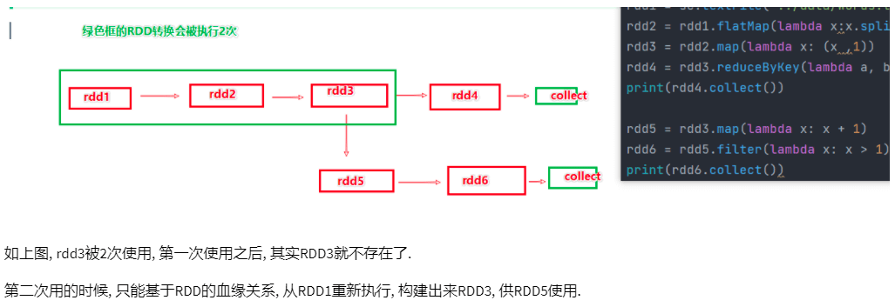
如果需要避免RDD的重复计算，就需要用到RDD持久化的API。
缓存
缓存主要使用cache或者persist接口。cache是persist的简化写法，对RDD的缓存cache等价于persist(MEMORY_ONLY)，对于DataFrame的缓存cache等价于persist(MEMORY_AND_DISK)。
from pyspark.storagelevel import StorageLevel
rdd1 = sc.parallelize(['a','a','a','a','b','b','b','c','c','d'], 3)
rdd2 = rdd1.map(lambda x:(x,1))
rdd3 = rdd2.reduceByKey(lambda x,y: x+y)
rdd3.cache() # 缓存，persist简化写法
rdd3.persist(StorageLevel.MEMORY_ONLY) # 内存缓存
rdd3.persist(StorageLevel.MEMORY_ONLY_2) # 内存缓存，2副本
rdd3.persist(StorageLevel.DISK_ONLY) # 磁盘缓存
rdd3.persist(StorageLevel.DISK_ONLY_2) # 磁盘缓存，2副本
rdd3.persist(StorageLevel.MEMORY_AND_DISK) # 先存内存，不够存磁盘
rdd3.persist(StorageLevel.MEMORY_AND_DISK_2) # 先存内存，不够存磁盘，2副本
rdd3.persist(StorageLevel.OFF_HEAP) # 堆外内存（系统内存）
rdd4 = rdd3.sortByKey(ascending=True, numPartitions=1)
print(rdd4.first())
print(rdd3.is_cached) # 查看是否被缓存了
rdd5 = rdd3.filter(lambda x:x[1]>1)
rdd6 = rdd5.sortByKey(ascending=False, numPartitions=1)
print(rdd6.first())
rdd3.unpersist() # 释放缓存
cache和persist这两个操作被认为是设计上不安全的，可能存在数据丢失风险，所以额外保存了RDD的血缘（依赖）关系，数据一旦丢失还可以重新计算。
各个分区的数据实际上是被分散存储在各自Executor的内存和硬盘上。
CheckPoint
CheckPoint也是数据持久化技术。它被认为是设计上安全的，它仅支持硬盘存储，且不保留血缘关系。数据存储前需要指定存储的路径，支持HDFS等分布式文件存储系统，所以属于集中存储。Local模式下可以使用本地文件系统。
sc.setCheckpointDir('checkpoint') # 设置CheckPoint文件存储路径
# sc.setCheckpointDir('hdfs://node1:8020/output/checkpoint')
rdd1 = sc.parallelize(['a','a','a','a','b','b','b','c','c','d'], 3)
rdd2 = rdd1.map(lambda x:(x,1))
rdd3 = rdd2.reduceByKey(lambda x,y: x+y)
rdd3.checkpoint() # 保存数据
rdd4 = rdd3.sortByKey(ascending=True, numPartitions=1)
print(rdd4.first())
print(rdd3.isCheckpointed()) # 查看是否被持久化了
rdd5 = rdd3.filter(lambda x:x[1]>1)
rdd6 = rdd5.sortByKey(ascending=False, numPartitions=1)
print(rdd6.first())
缓存和CheckPoint对比
- CheckPoint不管分区数量多少，风险是一定的；缓存分区越多，风险越高
- CheckPoint支持写入HDFS，缓存不行，HDFS是高可靠存储，CheckPoint被认为是安全的
- CheckPoint不支持内存，缓存可以，缓存写内存性能比CheckPoint要好一些
- CheckPoint不保留血缘关系；缓存会保存血缘关系
从任务运行的DAG图中也可以看到不同持久化的差别。左边是无持久化；中间是缓存，用绿点表示；右边直接就显示了checkpoint。
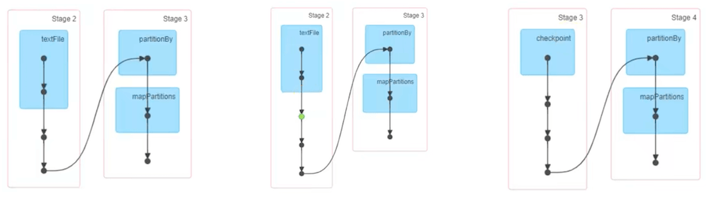
共享变量
广播变量
对于broadcast变量，每个Executor进程只会获取一次，Executor进程内不同分区任务共享broadcast数据。如果是普通的本地数据集，Executor进程内不同分区任务会独自请求获取该数据集，导致重复请求和内存资源浪费。
通俗理解就是，spark的Driver将本地的数据封装成broadcast变量，然后广播给所有Executor，Executor将广播的数据提供给自己内部不同分区任务共享。分区任务不再需要各自单独去获取相关数据。
broadcast_value = {'a': 1, 'b': 2, 'c': 3}
broadcast = sc.broadcast(broadcast_value) # 将本地数据标记为广播变量
rdd = sc.parallelize([('b', 'X'), ('c', 'Y'), ('d', 'Z')], 3)
def func(item):
id = item[0]
value = broadcast.value # 获取广播变量内的数据
if id in value.keys():
return (item[0], item[1], value[id])
else:
return (item[0], item[1], 0)
print(rdd.map(func).collect())
[('b', 'X', 2), ('c', 'Y', 3), ('d', 'Z', 0)]
累加器
考虑如下代码，本意是希望利用全局变量count做全局计数累加，但最终结果为0。因为count只是Driver中的本地变量，即使Executor中的分区任务获取到了count变量，也只能是在各自分区中累加。最后一句print打印的是Driver中的count值。
rdd = sc.parallelize([1,2,3,4,5,6,7,8,9,10], 3)
count = 0
def func(item):
global count
count += 1
print(count)
return item
rdd.map(func).collect()
print("count: ", count)
count: 0
1
1
2
3
2
3
4
1
2
3
为了解决以上问题，Spark引入了累加器，见如下代码：
rdd = sc.parallelize([1,2,3,4,5,6,7,8,9,10], 3)
count = sc.accumulator(0) # 设置全局累加器
def func(item):
global count
count += 1
print(count)
return item
rdd.map(func).collect()
print("count: ", count)
count: 10
1
2
3
4
1
2
3
1
2
3
但使用累加器需要注意，RDD属于过程数据，使用完毕后会被销毁。如果RDD被多次使用，会出现重复构建RDD的情况。如果该RDD中使用了累加器，这累加器会在之前的基础上继续累加。如果要解决重复累加的问题，可以使用缓存或者CheckPoint，避免RDD的重复构建。
rdd = sc.parallelize([1,2,3,4,5,6,7,8,9,10], 3)
count = sc.accumulator(0) # 设置全局累加器
def func(item):
global count
count += 1
print(count)
return item
rdd2 = rdd.map(func)
rdd2.collect()
# rdd3并没有使用到全局累加器
# 但因为rdd2需要被重新构建，导致全局累加器也再次累加
rdd3 = rdd2.map(lambda x: x+1)
rdd3.collect()
print("count: ", count)
count: 20
内核调度
DAG
Spark的核心是根据RDD来实现的，Spark Scheduler则为Spark核心实现的重要一环，其作用就是任务调度。Spark的任务调度就是如何组织任务去处理RDD中每个分区的数据，根据RDD的依赖关系构建DAG，基于DAG划分Stage，将每个Stage中的任务发到指定节点运行。基于Spark的任务调度原理，可以合理规划资源利用，做到尽可能用最少的资源高效地完成任务计算。
所谓DAG就是有向无环图，用来表现程序执行的流程。DAG是Spark代码的逻辑执行图，DAG的最终作用是为了构建物理上的Spark详细执行计划。以词频统计WordCount程序为例，以下为其DAG图：
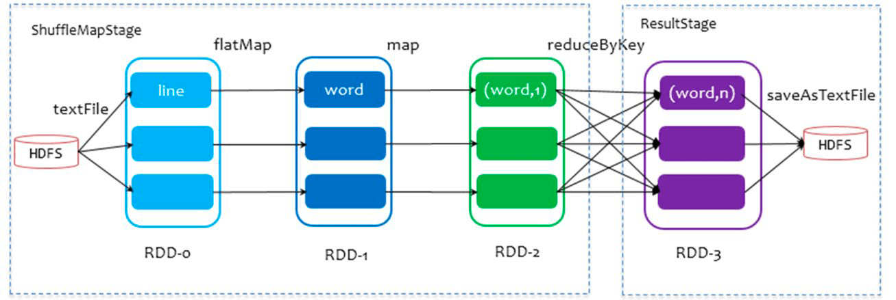
一个代码运行起来，在Spark中称之为一个Application。每个Application可以有多个Job。代码中的每个Action算子都会产生一个Job，每个Job都会有一个DAG图。
宽窄依赖
- 窄依赖：父RDD的一个分区，全部将数据发送给子RDD的一个分区
- 宽依赖：父RDD的一个分群，将数据发送给子RDD的多个分区，也就是Shuffle
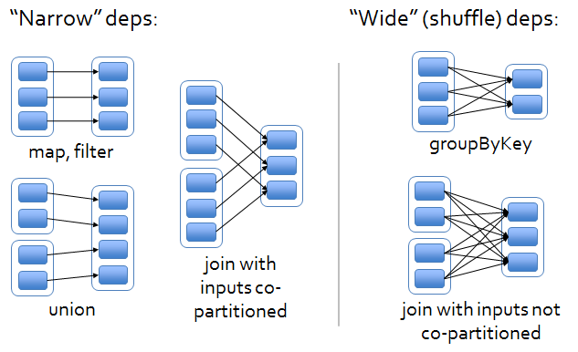
对于Spark来说，会根据DAG图，按照宽依赖划分不同的DAG阶段。划分的方式是：从后往前，遇到宽依赖就划分出一个阶段称之为Stage。
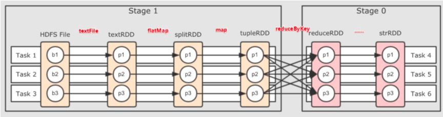
如图所示，在DAG中，基于宽依赖将DAG划分成了2个Stage。在每个Stage内部，一定都是窄依赖。
内存迭代计算
下图为带有分区的DAG图。可以看到：Task1、Task2、Task3这三个Task形成了三个并行的内存计算管道。在窄依赖内每个RDD的分区迭代计算（从RDD1直到RDD3）都由同一个Task负责。每一个Task都是一个具体的线程，进行纯内存的计算。
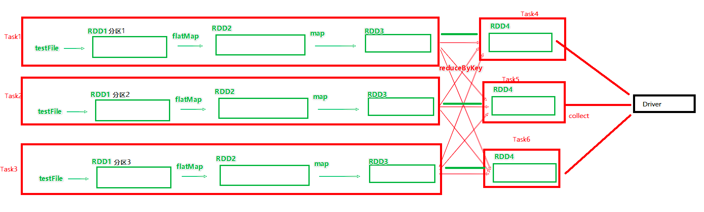
以下为内存迭代计算的层级关系梳理：
- 一个Spark环境可以同时运行多个Application
- 一个代码运行起来就成为一个Application
- 每个Application内部可以有多Job
- 每个Job由一个Action产生，并且每个Job会生成一个DAG执行图
- Job的DAG图会基于宽窄依赖划分成不同的Stage
- 不同Stage内基于分区数量，形成多个并行的内存迭代管道
- 每个内存迭代管道就是一个Task（DAG调度器将Job划分出具体的Task任务，这些Task任务在逻辑上称之为这个Job的
taskset）
并行度
Spark的并行度的含义是：在同一时间最多有多少个task在同时运行。如果task的并行度被设置为n，则RDD的分区也会被规划为n个分区。
并行度可以在Spark代码、配置文件以及客户端提交程序时的命令行参数中设置。具体优先级从高到低如下所示：
- 代码
- 命令行参数
- 配置文件
- 默认（基于读取文件的分片数量作为默认并行度，或者为1）
以下为全局并行度的设置方法：
# 配置文件
# conf/spark-defaults.conf中设置
spark.default.parallelism 100
# 客户端提交程序时的命令行参数
bin/spark-submit --conf "spark.default.parallelism=100"
# 代码中
conf = SparkConf()
conf.set("spark.default.parallelism", "100")
在代码中repartion 、coalesce、 partitionBy算子也可以针对RDD的并行度进行设置。
在实际生产环境中，推荐使用全局并行度设置。而不是专门修改RDD的分区。因为可能会影响内存迭代管道的构建，或者产生额外的Shuffle。
整个Spark集群的并行度可以根据整个集群的CPU核数来确定，大概是CPU总核心数的2~10倍。单个Application设置并行度的时候，需要参考整个集群的负载情况。通常单个Application的并行度可以通过其读取文件分片的数量作为最小的并行度。
任务调度
如图所示，Spark程序的调度流程如下：
- Driver被构建出来
- 构建SparkContext（执行环境入口对象）
- 基于DAG Scheduler（DAG调度器）构建逻辑Task分配
- 基于Task Scheduler（Task调度器）将逻辑Task分配到各个Executor上干活，并监控它们
- Worker（Executor）被TaskScheduler管理监控，听从它们的指令干活，并定期汇报进度
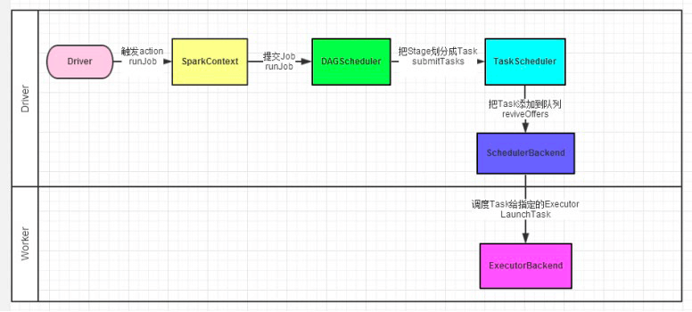
Spark Shuffle
To do
DataFrame/SparkSQL
DataFrame是从Spark 1.3版本开始引入的。通过DataFrame可以简化Spark程序的开发，让Spark处理结构化数据变得更简单。DataFrame可以使用SQL的方式来处理数据。
DataFrame和RDD有一些共同点，也是不可变的分布式数据集。但与RDD不一样的是，DataFrame是有schema的，有点类似于关系型数据库中的表，用于存储结构化的数据。有了schema，这也表明了DataFrame是比RDD提供更高层次的抽象。同样因为有了schema，序列化和反序列无需存储schema，这样节省了一定的空间。
另外，DataFrame引入off-heap（堆外内存），摆脱了JVM对内存的限制，不受GC的困扰。
但是DataFrame不是类型安全的。类型安全的问题在编译时是无法发现的，只有在代码运行时才会报错。增加了线上出错的概率和错误排除的难度。
Spark从1.6版本引入了DataSet。DataSet不仅拥有DataFrame的优点，同时是类型安全的。到了2.0版本，Spark将DataFrame和DataSet的API进行了合并，实现了跨库统一成为一套API。
package object sql {
// ...
type DataFrame = Dataset[Row]
}
从以上Spark 2.0的源码可以看出，调用DataFrame本质上就是在调用DataSet。
DataSet并不提供Python和R的API，因为Python和R本身就是弱类型的。Python和R只能使用DataFrame API。
RDD VS DataFrame
以下是DataFrame和RDD运行时效率的对比。可以看出DataFrame明显高于RDD。值得注意的是，在使用DataFrame时，即使是用的python API，效率也丝毫不弱于Java API。
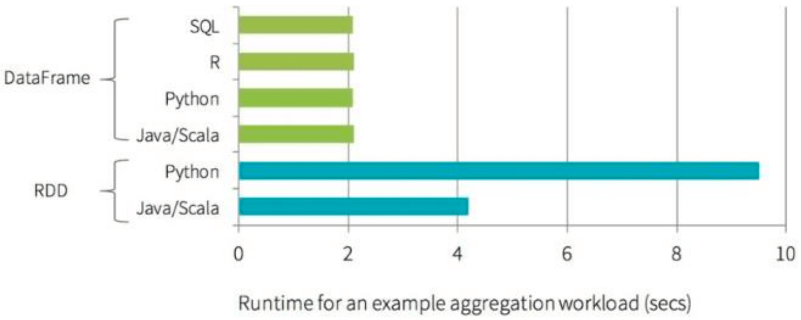
DataFrame VS DataSet
RDD (Spark1.0) —> Dataframe(Spark1.3) —> Dataset(Spark1.6)
- 在后期的Spark版本中，DataSet会逐步取代RDD和DataFrame成为唯一的API接口
DataSet是带泛型的DataFrame
- DataSet不支持Python和R，因为它们是弱类型的
Pandas DataFrame VS Spark DataFrame
熟悉Python数据处理的开发者肯定对Pandas库不陌生。Pandas库中也存在一个叫做DataFrame的数据结构。它跟Spark中的DataFrame有一些类似之处。以下列举两者的一些差别：
- Immuatable：Spark中，一旦RDD、DataFrame被创建，就不能更改，只能通过transformation生成新的RDD、DataFrame
- Lazy Evaluations：Spark中，对于RDD和DataFrame，只有action才会触发Transformation的执行
- Distributed：Spark中，DataFrame和RDD一样都是分布式的
- Pandas rich API：比Spark SQL api丰富
实际上，为了方便用惯了Pandas的Python数据开发者使用Spark。Spark实现了一套和Pandas完全一致的API，叫做Pandas on Spark。这样一来，这些数据开发者可以完全按照使用Pandas的方式来使用Spark。
import pyspark.pandas as ps
程序入口
在RDD阶段，程序的执行入口对象是：SparkContext。
在Spark 2.0后，推出了SparkSession对象，作为Spark编码的统一入口对象。原本的SparkContext入口对象也可以通过SparkSession对象获取。
from pyspark.sql import SparkSession
spark = SparkSession.builder.appName("dataframe").master("local[*]").getOrCreate()
sc = spark.sparkContext
DataFrame创建
# 构建DataFrame
rdd = sc.textFile("words.txt").\
flatMap(lambda x:x.split(' ')).\
map(lambda x:(x, 1)).\
reduceByKey(lambda a, b: a+b)
# 从RDD中构建DataFrame，需要定义schema
# 数据类型靠推断
df1 = spark.createDataFrame(rdd, schema=['word', 'count'])
df1.printSchema()
df1.show()
# 通过StructType定义DataFrame的Schema
# 可以指定数据类型
from pyspark.sql.types import StructType, StringType, IntegerType
schema = StructType().\
add('word', StringType(), nullable=False).\
add('count', IntegerType(), nullable=False)
df2 = spark.createDataFrame(rdd, schema)
df2.printSchema()
df2.show()
# 将RDD转为DataFrame
# 数据类型靠推断
df3 = rdd.toDF(['word', 'count'])
df3.printSchema()
df3.show()
# 将RDD转为DataFrame，传入schema
# 可以指定数据类型
df4 = rdd.toDF(schema)
df4.printSchema()
df4.show()
# 将Pandas的DataFrame对象，转化为Spark中的DataFrame
import pandas as pd
# 开启arrow来提升Python和JVM之间的数据转化效率（需要安装PyArrow）
spark.conf.set("spark.sql.execution.arrow.pyspark.enabled", "true")
pandas_df = pd.DataFrame({'word':['hello','world','spark'],
'count':[3,1,2]})
df5 = spark.createDataFrame(pandas_df)
df5.printSchema()
df5.show()
# 直接通过SparkSession创建
from pyspark.sql import Row
df6 = spark.createDataFrame([Row(word='hello', count=3),
Row(word='world', count=1),
Row(word='spark', count=2)])
df6.printSchema()
df6.show()
# 直接通过SparkSession创建
# 设置schema
df7 = spark.createDataFrame([('hello', 3),
('world', 1),
('spark', 2)],
schema="word string, count int")
df7.printSchema()
df7.show()
# 通过读取文件构建DataFrame
import os
if not os.path.exists("wordcount.csv"):
df1.write.csv('wordcount.csv', header=True)
spark.read.csv('wordcount.csv', header=True).show()
if not os.path.exists("wordcount.parquet"):
df1.write.parquet('wordcount.parquet')
spark.read.parquet('wordcount.parquet').show()
if not os.path.exists("wordcount.orc"):
df1.write.orc('wordcount.orc')
spark.read.orc('wordcount.orc').show()
DataFrame编程
DataFrame编程支持2种风格：
- DSL风格
- SQL风格：需要将DataFrame注册成表
DSL风格API
df = df1.select('word', 'count')
df.show()
print(df.columns)
print(df)
# 获取Column对象
word = df['word']
print(word)
print(df.word)
# select
df.select(['word', 'count']).show()
# 以下4行都可以返回所选列的数据
df.select(['word']).show()
df.select('word').show()
df.select(df['word']).show()
df.select(df.word).show()
# filter和where，功能等价
df.filter("count > 1").show()
df.filter(df['count'] > 1).show()
# df.filter(df.count > 1).show() 这个会报错
df.where("count > 1").show()
df.where(df['count'] > 1).show()
# groupBy
df.groupBy("count").count().show()
df.groupBy(df['count']).count().show()
SQL风格API，即SparkSQL
# 使用SparkSQL，需要先将DataFrame注册成视图（表）
# 注册临时视图
df.createTempView('wordcount')
# 注册临时视图，如果已存在则替换
df.createOrReplaceTempView('wordcount')
# 注册全局视图（全局视图可以跨SparkSession对象使用）
df.createGlobalTempView('wordcount')
df2 = spark.sql("SELECT count(*) FROM wordcount")
df2.show()
# 使用全局视图，表名前要加global_temp
spark.newSession().sql("SELECT * FROM global_temp.wordcount WHERE count>1").show()
+--------+
|count(1)|
+--------+
| 5|
+--------+
+-----+-----+
| word|count|
+-----+-----+
|Hello| 3|
|Spark| 2|
+-----+-----+
SparkSQL Word Count
# 利用SparkSQL做wordcount
# functions中包含了一些spark的内置函数供SparkSQL使用
# 这些函数的返回值多数为Column对象
from pyspark.sql import functions as F
df = spark.read.text("words.txt")
# 方法一：用SQL
# F.split用来对每行数据按空格拆分
# F.explode将一行array数据转成多行
# alias用来改列名
df.select(F.explode(F.split('value', " ")).alias('word')).createOrReplaceTempView('wordcount')
spark.sql("SELECT word, count(*) AS count FROM wordcount GROUP BY word").show()
# 方法二：用DSL
df=df.select(F.explode(F.split('value', " ")).alias('word'))
df.groupBy("word").agg(F.count("*").alias("count")).show()
SparkSQL中，当Job产生shuffle的时候，默认的分区数为200，可能过多，在实际项目中需要合理设置。具体配置方式类似之前并行度的设置：
# 配置文件
# conf/spark-defaults.conf中设置
spark.sql.partitions 100
# 客户端提交程序时的命令行参数
bin/spark-submit --conf "spark.sql.partitions=100"
# 代码中
spark = SparkSession.builder.\
appName("dataframe").\
master("local[*]").\
config("spark.sql.partitions", "100").\
getOrCreate()
自定义函数
UDF（User Defined Function）：一对一；SparkSQL python只支持UDF
SparkSQL中，UDF有2中定义方式：
方式1语法：
udf对象 = sparksession.udf.register(参数1，参数2，参数3）参数1：UDF名称，可用于SQL风格 参数2：被注册成UDF的方法名 参数3：声明UDF的返回值类型 udf对象：返回值对象，是一个UDF对象，可用于DSL风格# UDF（User Defined Function） from pyspark.sql.types import IntegerType df = spark.createDataFrame([(1, "John Doe", 21)], ("id", "name", "age")) udf_slen = spark.udf.register("UDFSlen", lambda s: len(s), IntegerType()) def to_upper(s): if s is not None: return s.upper() udf_to_upper = spark.udf.register("UDFUpper", to_upper) def add_one(x): if x is not None: return x + 1 udf_add_one = spark.udf.register("UDFAddOne", add_one, IntegerType()) df.createOrReplaceTempView("users") spark.sql("SELECT UDFSlen(name), UDFUpper(name), UDFAddOne(age) FROM users").show() df.selectExpr("UDFUpper(name)").show() df.select(udf_slen("name"), udf_to_upper("name"), udf_add_one("age")).show()+-------------+--------------+--------------+ |UDFSlen(name)|UDFUpper(name)|UDFAddOne(age)| +-------------+--------------+--------------+ | 8| JOHN DOE| 22| +-------------+--------------+--------------+ +--------------+ |UDFUpper(name)| +--------------+ | JOHN DOE| +--------------+ +-------------+--------------+--------------+ |UDFSlen(name)|UDFUpper(name)|UDFAddOne(age)| +-------------+--------------+--------------+ | 8| JOHN DOE| 22| +-------------+--------------+--------------+
方式2语法：
udf对象= F.udf(参数1，参数2)参数1：被注册成UDF的方法名 参数2：声明UDF的返回值类型 udf对象：返回值对象，是一个UDF对象，可用于DSL风格 其中F是：from pyspark.sql import functions as F# UDF（User Defined Function） from pyspark.sql.functions import udf from pyspark.sql.types import IntegerType df = spark.createDataFrame([(1, "John Doe", 21)], ("id", "name", "age")) slen = udf(lambda s: len(s), IntegerType()) @udf def to_upper(s): if s is not None: return s.upper() @udf(returnType=IntegerType()) def add_one(x): if x is not None: return x + 1 df.select(slen("name").alias("slen(name)"), to_upper("name"), add_one("age")).show()+----------+--------------+------------+ |slen(name)|to_upper(name)|add_one(age)| +----------+--------------+------------+ | 8| JOHN DOE| 22| +----------+--------------+------------+
UDAF（User Defined Aggregation Function）：多对一；PySpark不支持
UDTF（User Defined Table-Generating Function）：一对多，一行变多行；PySpark不支持
SparkSQL的执行流程
SparkSQL利用Catalyst优化器解析优化SQL语句并生成执行计划，具体流程如下：
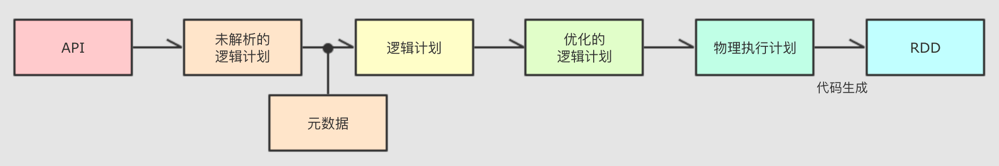
提交SparkSQL代码
Catalyst优化：
a. 生成原始的未解析的AST（抽象语法树）
b. 为AST加入元数据
c. 优化AST：进行谓词下推和列值裁剪以及其它方面的优化
d. 将最终的AST生成物理执行计划
e. 将物理执行计划翻译为RDD代码
Driver构建环境入口（SparkSession）
DAG调度器规划逻辑任务
Task调度器分贝逻辑任务到具体的Executor上工作并监控管理任务
Worker干活
Catalyst的SQL优化细节很多，大方面的优化有2点：
- 谓词下推（Predicate Pushdown）：简单说就是行过滤，提前执行where
- 列值裁剪（Column Pruning）：简单说就是列过滤，提前规划select的字段数量
Spark On Hive vs Hive on Spark
- Spark On Hive：使用Hive的Metastore服务作为元数据管理服务，代码由SparkSQL编写，计算由Spark执行。
- Hive On Spark：将Hive的计算引擎替换为Spark。代码还是由Hive SQL编写。这样可以利用Hive更完善的生态。
这俩相互利用。Hive默认的计算引擎是MapReduce，计算速度太慢，所以发展方向是逐步兼容多种计算引擎。Spark的问题是没有元数据管理，所以需要利用Hive的元数据。
分布式SQL执行引擎
由ThriftServer提供接入服务，后端由Spark On Hive提供查询服务
只用写SQL就能实现SparkSQL的分布式SQL计算
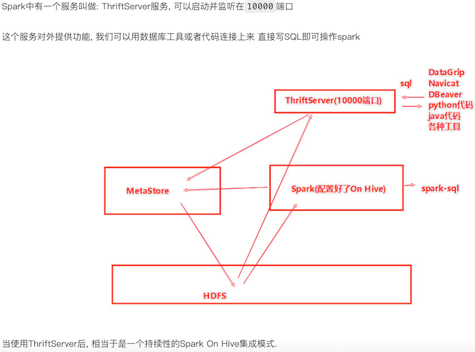
Spark Streaming
Spark Streaming VS Flink
- Spark Streaming是微批，实时性不如Flink
- 单位时间里的吞吐量略大于Flink
Structured Streaming
TO DO
Spark MLib
TO DO
常见问题
数据倾斜
key加盐
- 但是对于join产生的数据倾斜没法用这种方案
- 如果join的是一个很小的RDD，可以尝试把这个RDD转换成广播变量，从而避免reduce join产生的shuffle
3.0以后的版本开启AQE
Adaptive Query Execution自适应查询(SparkSQL)
动态合并Shuffle Partitions
- 合并小的分群
动态调整Join策略
- 将小RDD转成广播变量
动态优化倾斜Join
将严重倾斜的分区分割成小分区
- 中位数的10倍且大于256M